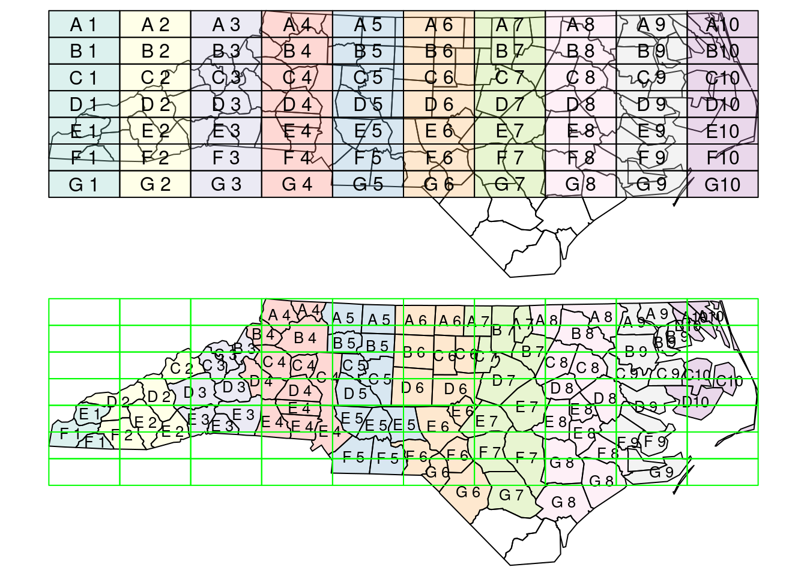
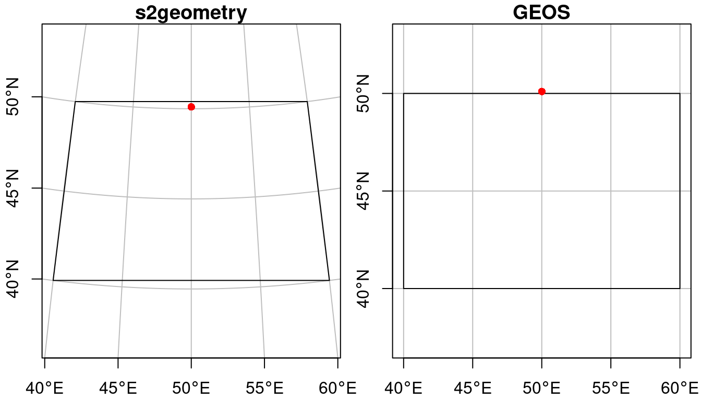

library(sf)
# Linking to GEOS 3.10.2, GDAL 3.4.3, PROJ 8.2.1; sf_use_s2() is TRUE
p1 <- st_point(c(7.35, 52.42))
p2 <- st_point(c(7.22, 52.18))
p3 <- st_point(c(7.44, 52.19))
sfc <- st_sfc(list(p1, p2, p3), crs = 'OGC:CRS84')
st_sf(elev = c(33.2, 52.1, 81.2),
marker = c("Id01", "Id02", "Id03"), geom = sfc)
# Simple feature collection with 3 features and 2 fields
# Geometry type: POINT
# Dimension: XY
# Bounding box: xmin: 7.22 ymin: 52.2 xmax: 7.44 ymax: 52.4
# Geodetic CRS: WGS 84
# elev marker geom
# 1 33.2 Id01 POINT (7.35 52.4)
# 2 52.1 Id02 POINT (7.22 52.2)
# 3 81.2 Id03 POINT (7.44 52.2)7 Introduction to sf and stars
This chapter introduces R packages sf and stars. sf provides a table format for simple features, where feature geometries are stored in a list-column. R package stars was written to support raster and vector datacubes (Chapter 6), supporting raster layers, raster stacks and feature time series as special cases. sf first appeared on CRAN in 2016, stars in 2018. Development of both packages received support from the R Consortium as well as strong community engagement. The packages were designed to work together. Functions or methods operating on sf or stars objects start with st_, making it easy to recognise them or to search for them when using command line completion.
7.1 Package sf
Intended to succeed and replace R packages sp, rgeos and the vector parts of rgdal, R package sf (Pebesma 2018) was developed to move spatial data analysis in R closer to standards-based approaches seen in the industry and open source projects, to build upon more modern versions of the open source geospatial software stack (Figure 1.7), and to allow for integration of R spatial software with the tidyverse (Wickham et al. 2019a), if desired.
To do so, R package sf provides simple features access (Herring et al. 2011), natively, to R. It provides an interface to several tidyverse packages, in particular to ggplot2, dplyr and tidyr. It can read and write data through GDAL, execute geometrical operations using GEOS (for projected coordinates) or s2geometry (for ellipsoidal coordinates), and carry out coordinate transformations or conversions using PROJ. External C++ libraries are interfaced using R package Rcpp (Eddelbuettel 2013).
Package sf represents sets of simple features in sf objects, a sub-class of a data.frame or tibble. sf objects contain at least one geometry list-column of class sfc, which for each element contains the geometry as an R object of class sfg. A geometry list-column acts as a variable in a data.frame or tibble, but has a more complex structure than e.g. numeric or character variables.
An sf object has the following meta-data:
- the name of the (active) geometry column, held in attribute
sf_column - for each non-geometry variable, the attribute-geometry relationship (Section 5.1), held in attribute
agr
An sfc geometry list-column is extracted from an sf object with st_geometry and has the following meta-data:
- the coordinate reference system held in attribute
crs - the bounding box held in attribute
bbox - the precision held in attribute
precision - the number of empty geometries held in attribute
n_empty
These attributes may best be accessed or set by using functions like st_bbox, st_crs, st_set_crs, st_agr, st_set_agr, st_precision, and st_set_precision.
Geometry columns in sf objects can be set or replaced using st_geometry<- or st_set_geometry.
Creation
An sf object can be created from scratch by e.g.

sf objectFigure 7.1 gives an explanation of the components printed. Rather than creating objects from scratch, spatial data in R are typically read from an external source, which can be:
- an external file
- a table (or set of tables) in a database
- a request to a web service
- a dataset held in some form in another R package
The next section introduces reading from files; Section 9.1 discusses handling of datasets too large to fit into working memory.
Reading and writing
Reading datasets from an external “data source” (file, web service, or even string) is done using st_read:
library(sf)
(file <- system.file("gpkg/nc.gpkg", package = "sf"))
# [1] "/home/edzer/R/x86_64-pc-linux-gnu-library/4.0/sf/gpkg/nc.gpkg"
nc <- st_read(file)
# Reading layer `nc.gpkg' from data source
# `/home/edzer/R/x86_64-pc-linux-gnu-library/4.0/sf/gpkg/nc.gpkg'
# using driver `GPKG'
# Simple feature collection with 100 features and 14 fields
# Geometry type: MULTIPOLYGON
# Dimension: XY
# Bounding box: xmin: -84.3 ymin: 33.9 xmax: -75.5 ymax: 36.6
# Geodetic CRS: NAD27Here, the file name and path file is read from the sf package, which has a different path on every machine, and hence is guaranteed to be present on every sf installation.
Command st_read has two arguments: the data source name (dsn) and the layer. In the example above, the geopackage (GPKG) file contains only a single layer that is being read. If it had contained multiple layers, then the first layer would have been read and a warning would have been emitted. The available layers of a data set can be queried by
st_layers(file)
# Driver: GPKG
# Available layers:
# layer_name geometry_type features fields crs_name
# 1 nc.gpkg Multi Polygon 100 14 NAD27Simple feature objects can be written with st_write, as in
(file = tempfile(fileext = ".gpkg"))
# [1] "/tmp/RtmpLZWds0/file78a5675c41341.gpkg"
st_write(nc, file, layer = "layer_nc")
# Writing layer `layer_nc' to data source
# `/tmp/RtmpLZWds0/file78a5675c41341.gpkg' using driver `GPKG'
# Writing 100 features with 14 fields and geometry type Multi Polygon.where the file format (GPKG) is derived from the file name extension. Using argument append, st_write can either append records to an existing layer or replace it; if unset it will error if a layer already exists. The tidyverse-style write_sf will replace silently if append has not been set. Layers can also be deleted, e.g. from a database, using st_delete.
For file formats supporting a WKT2 coordinate reference system, sf_read and sf_write will read and write it. For simple formats such as csv this will not work. The shapefile format supports only a very limited encoding of the CRS.
Subsetting
A very common operation is to subset objects; base R can use [ for this. The rules that apply to data.frame objects also apply to sf objects, e.g. that records 2-5 and columns 3-7 are selected by
nc[2:5, 3:7]but with a few additional features, in particular:
- the
dropargument is by defaultFALSEmeaning that the geometry column is always selected, and ansfobject is returned; when it is set toTRUEand the geometry column not selected, it is dropped and adata.frameis returned - selection with a spatial (
sf,sfcorsfg) object as first argument leads to selection of the features that spatially intersect with that object (see next section); other predicates than intersects can be chosen by setting parameteropto a function such asst_coversor or any other binary predicate function listed in Section 3.2.2
Binary predicates
Binary predicates like st_intersects, st_covers etc (Section 3.2.2) take two sets of features or feature geometries and return for all pairs whether the predicate is TRUE or FALSE. For large sets this would potentially result in a huge matrix, typically filled mostly with FALSE values and for that reason a sparse representation is returned by default:
nc5 <- nc[1:5, ]
nc7 <- nc[1:7, ]
(i <- st_intersects(nc5, nc7))
# Sparse geometry binary predicate list of length 5, where the
# predicate was `intersects'
# 1: 1, 2
# 2: 1, 2, 3
# 3: 2, 3
# 4: 4, 7
# 5: 5, 6Code
plot(st_geometry(nc7))
plot(st_geometry(nc5), add = TRUE, border = "brown")
cc = st_coordinates(st_centroid(st_geometry(nc7)))
text(cc, labels = 1:nrow(nc7), col = "blue")
Figure 7.2 shows how the intersections of the first five with the first seven counties can be understood. We can transform the sparse logical matrix into a dense matrix by
as.matrix(i)
# [,1] [,2] [,3] [,4] [,5] [,6] [,7]
# [1,] TRUE TRUE FALSE FALSE FALSE FALSE FALSE
# [2,] TRUE TRUE TRUE FALSE FALSE FALSE FALSE
# [3,] FALSE TRUE TRUE FALSE FALSE FALSE FALSE
# [4,] FALSE FALSE FALSE TRUE FALSE FALSE TRUE
# [5,] FALSE FALSE FALSE FALSE TRUE TRUE FALSEThe number of counties that each of nc5 intersects with is
lengths(i)
# [1] 2 3 2 2 2and the other way around, the number of counties in nc5 that intersect with each of the counties in nc7 is
lengths(t(i))
# [1] 2 3 2 1 1 1 1The object i is of class sgbp (sparse geometrical binary predicate), and is a list of integer vectors, with each element representing a row in the logical predicate matrix holding the column indices of the TRUE values for that row. It further holds some metadata like the predicate used, and the total number of columns. Methods available for sgbp objects include
methods(class = "sgbp")
# [1] as.data.frame as.matrix coerce dim
# [5] initialize Ops print show
# [9] slotsFromS3 t
# see '?methods' for accessing help and source codewhere the only Ops method available is !, the negation operation.
tidyverse
The tidyverse package loads a collection of data science packages that work together, described e.g. in (Wickham and Grolemund 2017; Wickham et al. 2019b). Package sf has tidyverse-style read and write functions, read_sf and write_sf that
- return a tibble rather than a
data.frame, - do not print any output, and
- overwrite existing data by default.
Further tidyverse generics with methods for sf objects include filter, select, group_by, ungroup, mutate, transmute, rowwise, rename, slice, summarise, distinct, gather, pivot_longer, spread, nest, unnest, unite, separate, separate_rows, sample_n, and sample_frac. Most of these methods simply manage the metadata of sf objects, and make sure the geometry remains present. In case a user wants the geometry to be removed, one can use st_drop_geometry() or simply coerce to a tibble or data.frame before selecting:
library(tidyverse) |> suppressPackageStartupMessages()
nc |> as_tibble() |> select(BIR74) |> head(3)
# # A tibble: 3 × 1
# BIR74
# <dbl>
# 1 1091
# 2 487
# 3 3188The summarise method for sf objects has two special arguments:
do_union(defaultTRUE) determines whether grouped geometries are unioned on return, so that they form a valid geometryis_coverage(defaultFALSE) in case the geometries grouped form a coverage (do not have overlaps), setting this toTRUEspeeds up the unioning
The distinct method selects distinct records, where st_equals is used to evaluate distinctness of geometries.
filter can be used with the usual predicates; when one wants to use it with a spatial predicate, e.g. to select all counties less than 50 km away from Orange county, one could use
orange <- nc |> dplyr::filter(NAME == "Orange")
wd <- st_is_within_distance(nc, orange,
units::set_units(50, km))
o50 <- nc |> dplyr::filter(lengths(wd) > 0)
nrow(o50)
# [1] 17(where we use dplyr::filter rather than filter to avoid confusion with filter from base R.)
Figure 7.3 shows the results of this analysis, and in addition a buffer around the county borders; note that this buffer serves for illustration, it was not used to select the counties.
Code
og <- st_geometry(orange)
buf50 <- st_buffer(og, units::set_units(50, km))
all <- c(buf50, st_geometry(o50))
plot(st_geometry(o50), lwd = 2, extent = all)
plot(og, col = 'orange', add = TRUE)
plot(buf50, add = TRUE, col = NA, border = 'brown')
plot(st_geometry(nc), add = TRUE, border = 'grey')
7.2 Spatial joins
In regular (left, right or inner) joins, joined records from a pair of tables are reported when one or more selected attributes match (are identical) in both tables. A spatial join is similar, but the criterion to join records is not equality of attributes but a spatial predicate. This leaves a wide variety of options in order to define spatially matching records, using binary predicates listed in Section 3.2.2. The concepts of “left”, “right”, “inner” or “full” joins remain identical to the non-spatial join as the options for handling records that have no spatial match.
When using spatial joins, each record may have several matched records, yielding a large result table. A way to reduce this complexity may be to select from the matching records the one with the largest overlap with the target geometry. An example of this is shown (visually) in Figure 7.4 ; this is done using st_join with argument largest = TRUE.
Code
# example of largest = TRUE:
system.file("shape/nc.shp", package="sf") |>
read_sf() |>
st_transform('EPSG:2264') -> nc
gr <- st_sf(
label = apply(expand.grid(1:10, LETTERS[10:1])[,2:1], 1, paste0, collapse = ""),
geom = st_make_grid(nc))
gr$col <- sf.colors(10, categorical = TRUE, alpha = .3)
# cut, to verify that NA's work out:
gr <- gr[-(1:30),]
suppressWarnings(nc_j <- st_join(nc, gr, largest = TRUE))
par(mfrow = c(2,1), mar = rep(0,4))
plot(st_geometry(nc_j))
plot(st_geometry(gr), add = TRUE, col = gr$col)
text(st_coordinates(st_centroid(st_geometry(gr))), labels = gr$label)
# the joined dataset:
plot(st_geometry(nc_j), border = 'black', col = nc_j$col)
text(st_coordinates(st_centroid(st_geometry(nc_j))), labels = nc_j$label, cex = .8)
plot(st_geometry(gr), border = 'green', add = TRUE)
st_join with largest = TRUE: the label of the polygon in the top figure with the largest intersection with polygons in the bottom figure is assigned to the polygons of the bottom figure.
Another way to reduce the result set is to use aggregate after a join, to merge all matching records, and union their geometries; see Section 5.4.
Sampling, gridding, interpolating
Several convenience functions are available in package sf, some of which will be discussed here. Function st_sample generates a sample of points randomly sampled from target geometries, where target geometries can be point, line or polygon geometries. Sampling strategies can be (completely) random, regular or (with polygons) triangular. Chapter 11 explains how spatial sampling (or point pattern simulation) methods available in package spatstat are interfaced through st_sample.
Function st_make_grid creates a square, rectangular or hexagonal grid over a region, or points with the grid centres or corners. It was used to create the rectangular grid in Figure 7.4 .
Function st_interpolate_aw “interpolates” area values to new areas, as explained in Section 5.3, both for intensive and extensive variables.
7.3 Ellipsoidal coordinates
Unprojected data have ellipsoidal coordinates, expressed in degrees east and north. As explained in Section 4.1, “straight” lines between points are the curved shortest paths (“geodesic”). By default, sf uses geometrical operations from the s2geometry library, interfaced through the s2 package (Dunnington, Pebesma, and Rubak 2022), and we see for instance that the point
"POINT(50 50.1)" |> st_as_sfc(crs = "OGC:CRS84") -> ptfalls inside the polygon:
"POLYGON((40 40, 60 40, 60 50, 40 50, 40 40))" |>
st_as_sfc(crs = "OGC:CRS84") -> pol
st_intersects(pt, pol)
# Sparse geometry binary predicate list of length 1, where the
# predicate was `intersects'
# 1: 1as illustrated by Figure 7.5 (left: straight lines on an orthographic projection centred at the plot area).
Code
par(mfrow = c(1, 2))
par(mar = c(2.1, 2.1, 1.2, .5))
ortho <- st_crs("+proj=ortho +lon_0=50 +lat_0=45")
pol |> st_transform(ortho) |> plot(axes = TRUE, graticule = TRUE,
main = 's2geometry')
pt |> st_transform(ortho) |> plot(add = TRUE, pch = 16, col = 'red')
# second plot:
plot(pol, axes = TRUE, graticule = TRUE, main = 'GEOS')
plot(pt, add = TRUE, pch = 16, col = 'red')
If one wants sf to use ellipsoidal coordinates as if they are Cartesian coordinates, the use of s2 can be switched off:
old <- sf_use_s2(FALSE)
# Spherical geometry (s2) switched off
st_intersects(pol, pt)
# although coordinates are longitude/latitude, st_intersects assumes
# that they are planar
# Sparse geometry binary predicate list of length 1, where the
# predicate was `intersects'
# 1: (empty)
sf_use_s2(old) # restore
# Spherical geometry (s2) switched onand the intersection is empty, as illustrated by Figure 7.5 (right: straight lines on an equidistant cylindrical projection). The warning indicates the planar assumption for ellipsoidal coordinates.
Use of s2 can be switched of for reasons of performance or compatibility with legacy implementations. The underlying libraries, GEOS for Cartesian and s2geometry for spherical geometry (Figure 1.7) were developed with different motivations, and their use through sf differs in some respects:
- certain operations may be much faster in one compared to the other, e.g. by using spatial indexes not available or not (yet) interfaced in the other
- certain functions may be available in only one of them (like
st_relatebeing only present in GEOS).
7.4 Package stars
Although package sp has always had limited support for raster data, over the last decade R package raster (Hijmans 2022a) has clearly been dominant as the prime package for powerful, flexible and scalable raster analysis. The raster data model of package raster (and its successor, terra (Hijmans 2022b)) is that of a 2D regular raster, or a set of raster layers (a “raster stack”). This aligns with the classical static “GIS view”, where the world is modelled as a set of layers, each representing a different theme. A lot of data available today however is dynamic, and comes as time series of rasters or raster stacks. A raster stack does not meaningfully reflect this, requiring the user to keep a register of which layer represents what.
Also, the raster package, and its successor terra do an excellent job in scaling computations up to data sizes no larger than the local storage (the computer’s hard drives), and doing this fast. Recent datasets however, including satellite imagery, climate model or weather forecasting data, often no longer fit in local storage (Chapter 9). Package spacetime (Pebesma 2012, 2022) did addresses the analysis of time series of vector geometries or raster grid cells, but did not extend to higher-dimensional arrays.
Here, we introduce package stars for analysing raster and vector data cubes. The package:
- allows for representing dynamic (time varying) raster stacks
- aims at being scalable, also beyond local disk size
- provides a strong integration of raster functions in the GDAL library
- in addition to regular grids handles rotated, sheared, rectilinear and curvilinear rasters (Figure 1.6)
- provides a tight integration with package sf
- also handles array data with non-raster spatial dimensions, the vector data cubes
- follows the tidyverse design principles
Vector data cubes include for instance time series for simple features, or spatial graph data such as potentially dynamic origin-destination matrices. The concept of spatial vector and raster data cubes was explained in Chapter 6. Irregular spacetime observations can be represented by sftime objects provided by package sftime (Teickner, Pebesma, and Graeler 2022), which extend sf objects with a time column (Section 13.3).
Reading and writing raster data
Raster data typically are read from a file. We use a dataset containing a section of Landsat 7 scene, with the 6 30m-resolution bands (bands 1-5 and 7) for a region covering the city of Olinda, Brazil. We can read the example GeoTIFF file holding a regular, non-rotated grid from the package stars:
tif <- system.file("tif/L7_ETMs.tif", package = "stars")
library(stars)
# Loading required package: abind
(r <- read_stars(tif))
# stars object with 3 dimensions and 1 attribute
# attribute(s):
# Min. 1st Qu. Median Mean 3rd Qu. Max.
# L7_ETMs.tif 1 54 69 68.9 86 255
# dimension(s):
# from to offset delta refsys point x/y
# x 1 349 288776 28.5 SIRGAS 2000 / ... FALSE [x]
# y 1 352 9120761 -28.5 SIRGAS 2000 / ... FALSE [y]
# band 1 6 NA NA NA NAwhere we see the offset, cell size, coordinate reference system, and dimensions. The dimension table contains the following fields for each dimension:
from: the starting indexto: the ending indexoffset: the dimension value at the start (edge) of the first pixeldelta: the cell size; negativedeltavalues indicate that pixel index increases with decreasing dimension valuesrefsys: the reference systempoint: boolean, indicating whether cell values have point support or cell supportx/y: an indicator whether a dimension is associated with a spatial raster x- or y-axis
One further field, values is hidden as it is not used. For regular, rotated or sheared grids or other regularly discretised dimensions (e.g. time), offset and delta are not NA; for for irregular cases, offset and delta are NA and the values property contains one of:
- the sequence of values, or intervals, in case of a rectilinear spatial raster or irregular time dimension
- in case of a vector data cube, geometries associated with the spatial dimension
- in case of a curvilinear raster, the matrix with coordinate values for each raster cell
- in case of a discrete dimension, the band names or labels associated with the dimension values
The object r is of class stars and is a simple list of length one, holding a three-dimensional array:
length(r)
# [1] 1
class(r[[1]])
# [1] "array"
dim(r[[1]])
# x y band
# 349 352 6and in addition holds an attribute with a dimensions table with all the metadata required to know what the array dimensions refer to, obtained by
st_dimensions(r)We can get the spatial extent of the array by
st_bbox(r)
# xmin ymin xmax ymax
# 288776 9110729 298723 9120761Raster data can be written to local disk using write_stars:
tf <- tempfile(fileext = ".tif")
write_stars(r, tf)where again the data format (in this case, GeoTIFF) is derived from the file extension. As for simple features, reading and writing uses the GDAL library; the list of available drivers for raster data is obtained by
st_drivers("raster")Subsetting stars data cubes
Data cubes can be subsetted using [, or using tidyverse verbs. The first options, [ uses for the arguments: attributes first, followed by dimension. This means that r[1:2, 101:200, , 5:10] selects from r attributes 1-2, index 101-200 for dimension 1, and index 5-10 for dimension 3; omitting dimension 2 means that no subsetting takes place. For attributes, attributes names or logical vectors can be used. For dimensions, logical vectors are not supported; Selecting discontinuous ranges is supported only when it is a regular sequence. By default, drop is FALSE, when set to TRUE dimensions with a single value are dropped:
r[,1:100, seq(1, 250, 5), 4] |> dim()
# x y band
# 100 50 1
r[,1:100, seq(1, 250, 5), 4, drop = TRUE] |> dim()
# x y
# 100 50For selecting particular ranges of dimension values, one can use filter (after loading dplyr):
library(dplyr, warn.conflicts = FALSE)
filter(r, x > 289000, x < 290000)
# stars object with 3 dimensions and 1 attribute
# attribute(s):
# Min. 1st Qu. Median Mean 3rd Qu. Max.
# L7_ETMs.tif 5 51 63 64.3 75 242
# dimension(s):
# from to offset delta refsys point x/y
# x 1 35 289004 28.5 SIRGAS 2000 / ... FALSE [x]
# y 1 352 9120761 -28.5 SIRGAS 2000 / ... FALSE [y]
# band 1 6 1 1 NA NAwhich changes the offset of the \(x\) dimension. Particular cube slices can also be obtained with slice, e.g.
slice(r, band, 3)
# stars object with 2 dimensions and 1 attribute
# attribute(s):
# Min. 1st Qu. Median Mean 3rd Qu. Max.
# L7_ETMs.tif 21 49 63 64.4 77 255
# dimension(s):
# from to offset delta refsys point x/y
# x 1 349 288776 28.5 SIRGAS 2000 / ... FALSE [x]
# y 1 352 9120761 -28.5 SIRGAS 2000 / ... FALSE [y]which drops the singular dimension band. mutate can be used on stars objects to add new arrays as functions of existing ones, transmute drops existing ones.
Cropping
Further subsetting can be done using spatial objects of class sf, sfc or bbox, e.g. when using the sample raster,
b <- st_bbox(r) |>
st_as_sfc() |>
st_centroid() |>
st_buffer(units::set_units(500, m))
r[b]
# stars object with 3 dimensions and 1 attribute
# attribute(s):
# Min. 1st Qu. Median Mean 3rd Qu. Max. NA's
# L7_ETMs.tif 22 54 66 67.7 78.2 174 2184
# dimension(s):
# from to offset delta refsys point x/y
# x 157 193 288776 28.5 SIRGAS 2000 / ... FALSE [x]
# y 159 194 9120761 -28.5 SIRGAS 2000 / ... FALSE [y]
# band 1 6 NA NA NA NAselects the circular centre region with a diameter of 500 metre, for the first band shown in Figure 7.6 ,
Code
plot(r[b][,,,1], reset = FALSE)
plot(b, border = 'brown', lwd = 2, col = NA, add = TRUE)
where we see that pixels outside the spatial object are assigned NA values. This object still has dimension indexes relative to the offset and delta values of r; we can reset these to a new offset with
r[b] |> st_normalize() |> st_dimensions()
# from to offset delta refsys point x/y
# x 1 37 293222 28.5 SIRGAS 2000 / ... FALSE [x]
# y 1 36 9116258 -28.5 SIRGAS 2000 / ... FALSE [y]
# band 1 6 NA NA NA NABy default, the resulting raster is cropped to the extent of the selection object; an object with the same dimensions as the input object is obtained with
r[b, crop = FALSE]
# stars object with 3 dimensions and 1 attribute
# attribute(s):
# Min. 1st Qu. Median Mean 3rd Qu. Max. NA's
# L7_ETMs.tif 22 54 66 67.7 78.2 174 731280
# dimension(s):
# from to offset delta refsys point x/y
# x 1 349 288776 28.5 SIRGAS 2000 / ... FALSE [x]
# y 1 352 9120761 -28.5 SIRGAS 2000 / ... FALSE [y]
# band 1 6 NA NA NA NACropping a stars object can alternatively be done directly with st_crop, as in
st_crop(r, b)Redimensioning and combining stars objects
Package stars uses package abind (Plate and Heiberger 2016) for a number of array manipulations. One of them is aperm which transposes an array by permuting it. A method for stars objects is provided, and
aperm(r, c(3, 1, 2))
# stars object with 3 dimensions and 1 attribute
# attribute(s):
# Min. 1st Qu. Median Mean 3rd Qu. Max.
# L7_ETMs.tif 1 54 69 68.9 86 255
# dimension(s):
# from to offset delta refsys point x/y
# band 1 6 NA NA NA NA
# x 1 349 288776 28.5 SIRGAS 2000 / ... FALSE [x]
# y 1 352 9120761 -28.5 SIRGAS 2000 / ... FALSE [y]permutes the order of dimensions of the resulting object.
Attributes and dimensions can be swapped, using split and merge:
(rs <- split(r))
# stars object with 2 dimensions and 6 attributes
# attribute(s):
# Min. 1st Qu. Median Mean 3rd Qu. Max.
# X1 47 67 78 79.1 89 255
# X2 32 55 66 67.6 79 255
# X3 21 49 63 64.4 77 255
# X4 9 52 63 59.2 75 255
# X5 1 63 89 83.2 112 255
# X6 1 32 60 60.0 88 255
# dimension(s):
# from to offset delta refsys point x/y
# x 1 349 288776 28.5 SIRGAS 2000 / ... FALSE [x]
# y 1 352 9120761 -28.5 SIRGAS 2000 / ... FALSE [y]
merge(rs, name = "band") |> setNames("L7_ETMs")
# stars object with 3 dimensions and 1 attribute
# attribute(s):
# Min. 1st Qu. Median Mean 3rd Qu. Max.
# L7_ETMs 1 54 69 68.9 86 255
# dimension(s):
# from to offset delta refsys point values x/y
# x 1 349 288776 28.5 SIRGAS 2000 / ... FALSE NULL [x]
# y 1 352 9120761 -28.5 SIRGAS 2000 / ... FALSE NULL [y]
# band 1 6 NA NA NA NA X1,...,X6split distributes the band dimension over 6 attributes of a 2-dimensional array, merge reverses this operation. st_redimension can be used for more generic operations, such as splitting a single array dimension over two new dimensions:
st_redimension(r, c(x = 349, y = 352, b1 = 3, b2 = 2))
# stars object with 4 dimensions and 1 attribute
# attribute(s):
# Min. 1st Qu. Median Mean 3rd Qu. Max.
# L7_ETMs.tif 1 54 69 68.9 86 255
# dimension(s):
# from to offset delta refsys point
# x 1 349 288776 28.5 SIRGAS 2000 / ... FALSE
# y 1 352 9120761 -28.5 SIRGAS 2000 / ... FALSE
# b1 1 3 NA NA NA NA
# b2 1 2 NA NA NA NAMultiple stars object with identical dimensions can be combined using c. By default, the arrays are combined as additional attributes, but by specifying an along argument, the arrays are merged along a new dimension:
c(r, r, along = "new_dim")
# stars object with 4 dimensions and 1 attribute
# attribute(s), summary of first 1e+05 cells:
# Min. 1st Qu. Median Mean 3rd Qu. Max.
# L7_ETMs.tif 47 65 76 77.3 87 255
# dimension(s):
# from to offset delta refsys point x/y
# x 1 349 288776 28.5 SIRGAS 2000 / ... FALSE [x]
# y 1 352 9120761 -28.5 SIRGAS 2000 / ... FALSE [y]
# band 1 6 NA NA NA NA
# new_dim 1 2 NA NA NA NAthe use of this is illustrated in Section 7.5.2.
Extracting point samples, aggregating
A very common use case for raster data cube analysis is the extraction of values at certain locations, or computing aggregations over certain geometries. st_extract extracts point values. We will do this for a few randomly sampled points over the bounding box of r:
set.seed(115517)
pts <- st_bbox(r) |> st_as_sfc() |> st_sample(20)
(e <- st_extract(r, pts))
# stars object with 2 dimensions and 1 attribute
# attribute(s):
# Min. 1st Qu. Median Mean 3rd Qu. Max.
# L7_ETMs.tif 12 41.8 63 61 80.5 145
# dimension(s):
# from to refsys point
# geometry 1 20 SIRGAS 2000 / ... TRUE
# band 1 6 NA NA
# values
# geometry POINT (293002 ...,...,POINT (290941 ...
# band NULLwhich results in a vector data cube with 20 points and 6 bands. (Setting the seed guarantees an identical sample when reproducing, it should not be set generate further randomly generated points.)
Another way of extracting information from data cubes is by aggregating it. One way of doing is by spatial aggregation, e.g. to values for spatial polygons or lines (Section 6.4). We can for instance compute the maximum pixel value for each band for each of the circles shown in figure Figure 1.4 (d) by
circles <- st_sample(st_as_sfc(st_bbox(r)), 3) |>
st_buffer(500)
aggregate(r, circles, max)
# stars object with 2 dimensions and 1 attribute
# attribute(s):
# Min. 1st Qu. Median Mean 3rd Qu. Max.
# L7_ETMs.tif 73 94.2 117 121 142 205
# dimension(s):
# from to refsys point
# geometry 1 3 SIRGAS 2000 / ... FALSE
# band 1 6 NA NA
# values
# geometry POLYGON ((2913...,...,POLYGON ((2921...
# band NULLwhich gives a data cube with 3 geometries and 6 bands. Aggregation over a temporal dimension is done by passing a time variable as the second argument to aggregate, as
- a set of time stamps indicating the start of time intervals or
- a time period like
"weeks","5 days"or"years"
Predictive models
The typical model prediction workflow in R is as follows:
- use a
data.framewith response and predictor variables (covariates) - create a model object based on this
data.frame - call
predictwith this model object and thedata.framewith target predictor variable values
Package stars provides a predict method for stars objects that essentially wraps the last step, by creating the data.frame, calling the predict method for that, and reconstructing a stars object with the predicted values.
We will illustrate this with a trivial two-class example mapping land from sea in the example Landsat dataset, using the sample points extracted above, shown in Figure 7.7.
Code
plot(r[,,,1], reset = FALSE)
col <- rep("yellow", 20)
col[c(8, 14, 15, 18, 19)] = "red"
st_as_sf(e) |> st_coordinates() |> text(labels = 1:20, col = col)
From this figure, we read “by eye” that the points 8, 14, 15, 18 and 19 are on water, the others on land. Using a linear discriminant (“maximum likelihood”) classifier, we find model predictions as shown in Figure 7.8 by
rs <- split(r)
trn <- st_extract(rs, pts)
trn$cls <- rep("land", 20)
trn$cls[c(8, 14, 15, 18, 19)] <- "water"
model <- MASS::lda(cls ~ ., st_drop_geometry(trn))
pr <- predict(rs, model)Here, we used the MASS:: prefix to avoid loading MASS, as that would mask select from dplyr. The split step is needed to convert the band dimension into attributes, so that they are offered as a set of predictors.
Code
plot(pr[1], key.pos = 4, key.width = lcm(3.5), key.length = lcm(2))
We also see that the layer plotted in Figure 7.8 is a factor variable, with class labels.
Plotting raster data
Code
plot(r)
We can use the base plot method for stars objects, where the plot created with plot(r) is shown in Figure 7.9. The default colour scale uses grey tones, and stretches these such that colour breaks correspond to data quantiles over all bands (“histogram equalization”). Setting breaks = "equal" gives equal colour breaks, alternatively a numeric sequence of breaks can be given. A more familiar view may the RGB or false colour composite shown in Figure 7.10.
Code
par(mfrow = c(1, 2))
plot(r, rgb = c(3,2,1), reset = FALSE, main = "RGB") # rgb
plot(r, rgb = c(4,3,2), main = "False colour (NIR-R-G)") # false colour
Further details and options are given in Chapter 8.
Analysing raster data
Element-wise mathematical functions (Section 6.3.2) on stars objects are just passed on to the arrays. This means that we can call functions and create expressions:
log(r)
# stars object with 3 dimensions and 1 attribute
# attribute(s):
# Min. 1st Qu. Median Mean 3rd Qu. Max.
# L7_ETMs.tif 0 3.99 4.23 4.12 4.45 5.54
# dimension(s):
# from to offset delta refsys point x/y
# x 1 349 288776 28.5 SIRGAS 2000 / ... FALSE [x]
# y 1 352 9120761 -28.5 SIRGAS 2000 / ... FALSE [y]
# band 1 6 NA NA NA NA
r + 2 * log(r)
# stars object with 3 dimensions and 1 attribute
# attribute(s):
# Min. 1st Qu. Median Mean 3rd Qu. Max.
# L7_ETMs.tif 1 62 77.5 77.1 94.9 266
# dimension(s):
# from to offset delta refsys point x/y
# x 1 349 288776 28.5 SIRGAS 2000 / ... FALSE [x]
# y 1 352 9120761 -28.5 SIRGAS 2000 / ... FALSE [y]
# band 1 6 NA NA NA NAor even mask out certain values:
r2 <- r
r2[r < 50] <- NA
r2
# stars object with 3 dimensions and 1 attribute
# attribute(s):
# Min. 1st Qu. Median Mean 3rd Qu. Max. NA's
# L7_ETMs.tif 50 64 75 79 90 255 149170
# dimension(s):
# from to offset delta refsys point x/y
# x 1 349 288776 28.5 SIRGAS 2000 / ... FALSE [x]
# y 1 352 9120761 -28.5 SIRGAS 2000 / ... FALSE [y]
# band 1 6 NA NA NA NAor un-mask areas:
r2[is.na(r2)] <- 0
r2
# stars object with 3 dimensions and 1 attribute
# attribute(s):
# Min. 1st Qu. Median Mean 3rd Qu. Max.
# L7_ETMs.tif 0 54 69 63 86 255
# dimension(s):
# from to offset delta refsys point x/y
# x 1 349 288776 28.5 SIRGAS 2000 / ... FALSE [x]
# y 1 352 9120761 -28.5 SIRGAS 2000 / ... FALSE [y]
# band 1 6 NA NA NA NA
Dimension-wise, we can apply functions to selected array dimensions (Section 6.3.3)) of stars objects similar to how apply does this to arrays. For instance, we can compute for each pixel the mean of the 6 band values by
st_apply(r, c("x", "y"), mean)
# stars object with 2 dimensions and 1 attribute
# attribute(s):
# Min. 1st Qu. Median Mean 3rd Qu. Max.
# mean 25.5 53.3 68.3 68.9 82 255
# dimension(s):
# from to offset delta refsys point x/y
# x 1 349 288776 28.5 SIRGAS 2000 / ... FALSE [x]
# y 1 352 9120761 -28.5 SIRGAS 2000 / ... FALSE [y]A more meaningful function would e.g. compute the NDVI (normalised differenced vegetation index):
ndvi <- function(b1, b2, b3, b4, b5, b6) (b4 - b3)/(b4 + b3)
st_apply(r, c("x", "y"), ndvi)
# stars object with 2 dimensions and 1 attribute
# attribute(s):
# Min. 1st Qu. Median Mean 3rd Qu. Max.
# ndvi -0.753 -0.203 -0.0687 -0.0643 0.187 0.587
# dimension(s):
# from to offset delta refsys point x/y
# x 1 349 288776 28.5 SIRGAS 2000 / ... FALSE [x]
# y 1 352 9120761 -28.5 SIRGAS 2000 / ... FALSE [y]Alternatively, one could have defined
ndvi2 <- function(x) (x[4]-x[3])/(x[4]+x[3])which is more convenient if the number of bands is large, but which is also much slower than ndvi as it needs to be called for every pixel whereas ndvi can be called once for all pixels, or for large chunks of pixels. The mean for each band over the whole image is computed by
st_apply(r, c("band"), mean) |> as.data.frame()
# band mean
# 1 1 79.1
# 2 2 67.6
# 3 3 64.4
# 4 4 59.2
# 5 5 83.2
# 6 6 60.0the result of which is small enough to be printed here as a data.frame. In these two examples, entire dimensions disappear. Sometimes, this does not happen (Section 6.3.2); we can for instance compute the three quartiles for each band
st_apply(r, c("band"), quantile, c(.25, .5, .75))
# stars object with 2 dimensions and 1 attribute
# attribute(s):
# Min. 1st Qu. Median Mean 3rd Qu. Max.
# L7_ETMs.tif 32 60.8 66.5 69.8 78.8 112
# dimension(s):
# from to values
# quantile 1 3 25%, 50%, 75%
# band 1 6 NULLand see that this creates a new dimension, quantile, with three values. Alternatively, the three quantiles over the 6 bands for each pixel are obtained by
st_apply(r, c("x", "y"), quantile, c(.25, .5, .75))
# stars object with 3 dimensions and 1 attribute
# attribute(s):
# Min. 1st Qu. Median Mean 3rd Qu. Max.
# L7_ETMs.tif 4 55 69.2 67.2 81.2 255
# dimension(s):
# from to offset delta refsys point
# quantile 1 3 NA NA NA NA
# x 1 349 288776 28.5 SIRGAS 2000 / ... FALSE
# y 1 352 9120761 -28.5 SIRGAS 2000 / ... FALSE
# values x/y
# quantile 25%, 50%, 75%
# x NULL [x]
# y NULL [y]Curvilinear rasters
There are several reasons why non-regular rasters occur (Figure 1.6). For one, when the data is Earth-bound, a regular raster does not fit the Earth’s surface, which is curved. Other reasons are:
- when we convert or transform a regular raster data into another coordinate reference system, it will become curvilinear unless we resample (warp; Section 7.8); warping always comes at the cost of some loss of data and is not reversible
- observation may lead to irregular rasters; e.g. for satellite swaths, we may have a regular raster in the direction of the satellite (not aligned with \(x\) or \(y\)), and rectilinear in the direction perpendicular to that (e.g. if the sensor discretises the viewing angle in equal sections)
GDAL utils
The GDAL library typically ships with a number of executable binaries, the GDAL command line utilities for data translation and processing. Several of these utilities (all except for those written in Python) are also available as C functions in the GDAL library, through the “GDAL Algorithms C API”. If an R package like sf that links to the GDAL library uses these C API algorithms, it means that the user no longer needs to install any GDAL binary command line utilities in addition to the R package.
Package sf allows calling these C API algorithms through function gdal_utils(), where the first argument is the name of the utility (stripped from the gdal prefix):
infoprints information on GDAL (raster) datasetswarpwarps a raster to a new raster, possibly in another CRSrasterizerasterises a vector datasettranslatetranslates a raster file to another formatvectortranslate(for ogr2ogr) translates a vector file to another formatbuildvrtcreates a virtual raster tile (a raster created from several files)demprocessingdoes various processing steps of digital elevation models (dems)nearblackconverts nearly black/white borders to blackgridcreates a regular grid from scattered datamdiminfoprints information on a multidimensional arraymdimtranslatetranslates a multidimensional array into another format
These utilities work on files, and not not directly on sf or stars objects. However, stars_proxy objects are essentially pointers to files, and other objects can be written to file. Several of these utilities are (always or optionally) used, e.g. by st_mosaic, st_warp or st_write. R package gdalUtilities (O’Brien 2022) provides further wrapper functions around sf::gdal_utils with function arguments identical to the command line arguments of the binary utils.
7.5 Vector data cube examples
Example: aggregating air quality time series
An air quality data set excerpt from the airBase European air quality data base, as it was also used by Gräler, Pebesma, and Heuvelink (2016) (the same data source is used in Chapter 12 and Chapter 13). Here, daily average PM\(_{10}\) values were computed for rural background stations in Germany, 1998-2009.
We can create a stars object from the air matrix, the dates Date vector and the stations SpatialPoints objects by
load("data/air.rda") # this loads several datasets in .GlobalEnv
dim(air)
# space time
# 70 4383
stations |>
st_as_sf(coords = c("longitude", "latitude"), crs = 4326) |>
st_geometry() -> st
d <- st_dimensions(station = st, time = dates)
(aq <- st_as_stars(list(PM10 = air), dimensions = d))
# stars object with 2 dimensions and 1 attribute
# attribute(s):
# Min. 1st Qu. Median Mean 3rd Qu. Max. NA's
# PM10 0 9.92 14.8 17.7 22 274 157659
# dimension(s):
# from to offset delta refsys point
# station 1 70 NA NA WGS 84 TRUE
# time 1 4383 1998-01-01 1 days Date FALSE
# values
# station POINT (9.59 53.7),...,POINT (9.45 49.2)
# time NULLWe can see from Figure 7.11 that the time series are quite long, but also have large missing value gaps. Figure 7.12 shows the spatial distribution of measurement stations along with mean PM\(_{10}\) values.
Code
par(mar = c(5.1, 4.1, 0.3, 0.1))
image(aperm(log(aq), 2:1), main = NULL)
Code
de_nuts1 <- read_sf("data/de_nuts1.gpkg")
st_as_sf(st_apply(aq, 1, mean, na.rm = TRUE)) |>
plot(reset = FALSE, pch = 16, extent = de_nuts1)
st_union(de_nuts1) |> plot(add = TRUE)
We can aggregate these station time series to area means, mostly as a simple exercise. For this, we use the aggregate method for stars objects
(a <- aggregate(aq, de_nuts1, mean, na.rm = TRUE))
# stars object with 2 dimensions and 1 attribute
# attribute(s):
# Min. 1st Qu. Median Mean 3rd Qu. Max. NA's
# PM10 1.08 10.9 15.3 17.9 21.8 172 25679
# dimension(s):
# from to offset delta refsys point
# geom 1 16 NA NA WGS 84 FALSE
# time 1 4383 1998-01-01 1 days Date FALSE
# values
# geom MULTIPOLYGON (...,...,MULTIPOLYGON (...
# time NULLand we can now show the maps for six arbitrarily chosen days (Figure 7.13), using
library(tidyverse)
a |> filter(time >= "2008-01-01", time < "2008-01-07") |>
plot(key.pos = 4)
or create a time series plot of mean values for a single state (Figure 7.14) by
library(xts) |> suppressPackageStartupMessages()
plot(as.xts(a)[,4], main = de_nuts1$NAME_1[4])
Example: Bristol origin-destination datacube
The data used for this example come from Lovelace, Nowosad, and Muenchow (2019), and concern origin-destination (OD) counts: the number of persons going from zone A to zone B, by transportation mode. We have feature geometries in sf object bristol_zones for the 102 origin and destination regions, shown in Figure 7.15.
Code
library(spDataLarge)
plot(st_geometry(bristol_zones), axes = TRUE, graticule = TRUE)
plot(st_geometry(bristol_zones)[33], col = 'red', add = TRUE)
and the OD counts come in a table bristol_od with OD pairs as records, and transportation mode as variables:
head(bristol_od)
# # A tibble: 6 × 7
# o d all bicycle foot car_driver train
# <chr> <chr> <dbl> <dbl> <dbl> <dbl> <dbl>
# 1 E02002985 E02002985 209 5 127 59 0
# 2 E02002985 E02002987 121 7 35 62 0
# 3 E02002985 E02003036 32 2 1 10 1
# 4 E02002985 E02003043 141 1 2 56 17
# 5 E02002985 E02003049 56 2 4 36 0
# 6 E02002985 E02003054 42 4 0 21 0We see that many combinations of origin and destination are implicit zeroes, otherwise these two numbers would have been similar:
nrow(bristol_zones)^2 # all combinations
# [1] 10404
nrow(bristol_od) # non-zero combinations
# [1] 2910We will form a three-dimensional vector datacube with origin, destination and transportation mode as dimensions. For this, we first “tidy” the bristol_od table to have origin (o), destination (d), transportation mode (mode), and count (n) as variables, using pivot_longer:
# create O-D-mode array:
bristol_tidy <- bristol_od |>
select(-all) |>
pivot_longer(3:6, names_to = "mode", values_to = "n")
head(bristol_tidy)
# # A tibble: 6 × 4
# o d mode n
# <chr> <chr> <chr> <dbl>
# 1 E02002985 E02002985 bicycle 5
# 2 E02002985 E02002985 foot 127
# 3 E02002985 E02002985 car_driver 59
# 4 E02002985 E02002985 train 0
# 5 E02002985 E02002987 bicycle 7
# 6 E02002985 E02002987 foot 35Next, we form the three-dimensional array a, filled with zeroes:
od <- bristol_tidy |> pull("o") |> unique()
nod <- length(od)
mode <- bristol_tidy |> pull("mode") |> unique()
nmode = length(mode)
a = array(0L, c(nod, nod, nmode),
dimnames = list(o = od, d = od, mode = mode))
dim(a)
# [1] 102 102 4We see that the dimensions are named with the zone names (o, d) and the transportation mode name (mode). Every row of bristol_tidy denotes a single array entry, and we can use this to to fill the non-zero entries of a using the bristol_tidy table to provide index (o, d and mode) and value (n):
a[as.matrix(bristol_tidy[c("o", "d", "mode")])] <-
bristol_tidy$nTo be sure that there is not an order mismatch between the zones in bristol_zones and the zone names in bristol_tidy, we can get the right set of zones by:
order <- match(od, bristol_zones$geo_code)
zones <- st_geometry(bristol_zones)[order](It happens that the order is already correct, but it is good practice to not assume this).
Next, with zones and modes we can create a stars dimensions object:
library(stars)
(d <- st_dimensions(o = zones, d = zones, mode = mode))
# from to refsys point values
# o 1 102 WGS 84 FALSE MULTIPOLYGON (...,...,MULTIPOLYGON (...
# d 1 102 WGS 84 FALSE MULTIPOLYGON (...,...,MULTIPOLYGON (...
# mode 1 4 NA FALSE bicycle,...,trainand finally build or stars object from a and d:
(odm <- st_as_stars(list(N = a), dimensions = d))
# stars object with 3 dimensions and 1 attribute
# attribute(s):
# Min. 1st Qu. Median Mean 3rd Qu. Max.
# N 0 0 0 4.8 0 1296
# dimension(s):
# from to refsys point values
# o 1 102 WGS 84 FALSE MULTIPOLYGON (...,...,MULTIPOLYGON (...
# d 1 102 WGS 84 FALSE MULTIPOLYGON (...,...,MULTIPOLYGON (...
# mode 1 4 NA FALSE bicycle,...,trainWe can take a single slice through this three-dimensional array, e.g. for zone 33 (Figure 7.15) , by odm[ , , 33], and plot it with
plot(adrop(odm[,,33]) + 1, logz = TRUE)
the result of which is shown in Figure 7.16 . Subsetting this way, we take all attributes (there is only one: N) since the first argument is empty, we take all origin regions (second argument empty), we take destination zone 33 (third argument), and all transportation modes (fourth argument empty, or missing).
We plotted this particular zone because it has the largest number of travellers as its destination. We can find this out by summing all origins and travel modes by destination:
d <- st_apply(odm, 2, sum)
which.max(d[[1]])
# [1] 33Other aggregations we can carry out include: total transportation by OD (102 x 102):
st_apply(odm, 1:2, sum)
# stars object with 2 dimensions and 1 attribute
# attribute(s):
# Min. 1st Qu. Median Mean 3rd Qu. Max.
# sum 0 0 0 19.2 19 1434
# dimension(s):
# from to refsys point values
# o 1 102 WGS 84 FALSE MULTIPOLYGON (...,...,MULTIPOLYGON (...
# d 1 102 WGS 84 FALSE MULTIPOLYGON (...,...,MULTIPOLYGON (...Origin totals, by mode:
st_apply(odm, c(1,3), sum)
# stars object with 2 dimensions and 1 attribute
# attribute(s):
# Min. 1st Qu. Median Mean 3rd Qu. Max.
# sum 1 57.5 214 490 771 2903
# dimension(s):
# from to refsys point values
# o 1 102 WGS 84 FALSE MULTIPOLYGON (...,...,MULTIPOLYGON (...
# mode 1 4 NA FALSE bicycle,...,trainDestination totals, by mode:
st_apply(odm, c(2,3), sum)
# stars object with 2 dimensions and 1 attribute
# attribute(s):
# Min. 1st Qu. Median Mean 3rd Qu. Max.
# sum 0 13 104 490 408 12948
# dimension(s):
# from to refsys point values
# d 1 102 WGS 84 FALSE MULTIPOLYGON (...,...,MULTIPOLYGON (...
# mode 1 4 NA FALSE bicycle,...,trainOrigin totals, summed over modes:
o <- st_apply(odm, 1, sum)Destination totals, summed over modes (we had this):
d <- st_apply(odm, 2, sum)We plot o and d together after joining them by
x <- (c(o, d, along = list(od = c("origin", "destination"))))
plot(x, logz = TRUE)
the result of which is shown in Figure 7.17 .
There is something to say for the argument that such maps give the wrong message, as both amount (colour) and polygon size give an impression of amount. To take out the amount in the count, we can compute densities (count / km\(^2\)), by
library(units)
a <- set_units(st_area(st_as_sf(o)), km^2)
o$sum_km <- o$sum / a
d$sum_km <- d$sum / a
od <- c(o["sum_km"], d["sum_km"], along =
list(od = c("origin", "destination")))
plot(od, logz = TRUE)
shown in Figure 7.18 . Another way to normalize these totals would be to divide them by population size.
Tidy array data
The tidy data paper (Wickham 2014) may suggest that such array data should be processed not as an array, but in a long (unnormalised) table form where each row holds (region, class, year, value), and it is always good to be able to do this. For primary handling and storage however, this is often not an option, because:
- a lot of array data are collected or generated as array data, e.g. by imagery or other sensory devices, or e.g. by climate models
- it is easier to derive the long table form from the array than vice versa
- the long table form requires much more memory, since the space occupied by dimension values is \(O(\Pi n_i)\), rather than \(O(\Sigma n_i)\), with \(n_i\) the cardinality (size) of dimension \(i\)
- when missing-valued cells are dropped, the long table form loses the implicit indexing of the array form
To put this argument to the extreme, consider for instance that all image, video and sound data are stored in array form; few people would make a real case for storing them in a long table form instead. Nevertheless, R packages like tsibble (Wang et al. 2021) take this approach, and have to deal with ambiguous ordering of multiple records with identical time steps for different spatial features and index them, which is solved for both automatically by using the array form – at the cost of using dense arrays, in package stars.
Package stars tries to follow the tidy manifesto to handle array sets, and has particularly developed support for the case where one or more of the dimensions refer to space, and/or time.
File formats for vector data cubes
Regular table forms, including the long table form are possible but clumsy to use: the origin-destination data example above and Chapter 13 illustrate the complexity of recreating a vector data cube from table forms. Array formats like NetCDF or Zarr are designed for storing array data. They can however be used for any data structure, and carry the risk that files once written are hard to reuse. For vector cubes that have a single geometry dimension that consists of either points, (multi)linestrings or (multi)polygons, the CF conventions (Eaton et al. 2022) describe a way to encode such geometries. stars::read_mdim and stars::write_mdim can read and write vector data cubes following these conventions.
7.6 raster-to-vector, vector-to-raster
Section 1.3 already showed some examples of raster-to-vector and vector-to-raster conversions. This section will add some code details and examples.
vector-to-raster
st_as_stars is meant as a method to transform objects into stars objects. However, not all stars objects are raster objects, and the method for sf objects creates a vector data cube with the geometry as its spatial (vector) dimension, and attributes as attributes. When given a feature geometry (sfc) object, st_as_stars will rasterize it, as shown in Section 7.8, and in Figure 7.19 .
file <- system.file("gpkg/nc.gpkg", package="sf")
read_sf(file) |>
st_geometry() |>
st_as_stars() |>
plot(key.pos = 4)
st_as_starsHere, st_as_stars can be parameterised to control cell size, number of cells, and/or extent. The cell values returned are 0 for cells with centre point outside the geometry and 1 for cell with centre point inside or on the border of the geometry. Rasterising existing features is done using st_rasterize, as also shown in Figure 1.5 :
library(dplyr)
read_sf(file) |>
mutate(name = as.factor(NAME)) |>
select(SID74, SID79, name) |>
st_rasterize()
# stars object with 2 dimensions and 3 attributes
# attribute(s):
# SID74 SID79 name
# Min. : 0 Min. : 0 Sampson : 655
# 1st Qu.: 3 1st Qu.: 3 Columbus: 648
# Median : 5 Median : 6 Robeson : 648
# Mean : 8 Mean :10 Bladen : 604
# 3rd Qu.:10 3rd Qu.:13 Wake : 590
# Max. :44 Max. :57 (Other) :30952
# NA's :30904 NA's :30904 NA's :30904
# dimension(s):
# from to offset delta refsys point x/y
# x 1 461 -84.3239 0.0192484 NAD27 FALSE [x]
# y 1 141 36.5896 -0.0192484 NAD27 FALSE [y]Similarly, line and point geometries can be rasterised, as shown in Figure 7.20 .
read_sf(file) |>
st_cast("MULTILINESTRING") |>
select(CNTY_ID) |>
st_rasterize() |>
plot(key.pos = 4)
7.7 Coordinate transformations and conversions
st_crs
Spatial objects of class sf or stars contain a coordinate reference system that can be retrieved or replaced with st_crs, or be set or replaced in a pipe with st_set_crs. Coordinate reference systems can be set with an EPSG code, like st_crs(4326) which will be converted to st_crs('EPSG:4326'), or with a PROJ.4 string like "+proj=utm +zone=25 +south", a name like “WGS84”, or a name preceded by an authority like “OGC:CRS84”; alternatives include a coordinate reference system definition in WKT, WKT-2 (Section 2.5) or PROJJSON. The object returned by st_crs contains two fields:
wktwith the WKT-2 representationinputwith the user input, if any, or a human readable description of the coordinate reference system, if available
Note that PROJ.4 strings can be used to define some coordinate reference systems, but they cannot be used to represent coordinate reference systems. Conversion of a WKT-2 in a crs object to a proj4string using the $proj4string method, as in
x <- st_crs("OGC:CRS84")
x$proj4string
# [1] "+proj=longlat +datum=WGS84 +no_defs"may succeed but is not in general lossless or invertible. Using PROJ.4 strings, for instance to define a parameterised, projected coordinate reference system is fine as long as it is associated with the WGS84 datum.
st_transform, sf_project
Coordinate transformations or conversions (Section 2.4) for sf or stars objects are carried out with st_transform, which takes as its first argument a spatial object of class sf or stars that has a coordinate reference system set, and as a second argument with an crs object (or something that can be converted to it with st_crs). When PROJ finds more than one possibility to transform or convert from the source crs to the target crs, it chooses the one with the highest declared accuracy. More fine-grained control over the options is explained in Section 7.7.5. For stars object with regular raster dimensions, st_transform will only transform coordinate and always result in a curvilinear grid. st_warp can be used to create a regular raster in a new coordinate reference system, by regridding (Section 7.8).
A lower-level function to transform or convert coordinates not in sf or stars objects is sf_project: it takes a matrix with coordinates and a source and target crs, and returns transformed or converted coordinates.
sf_proj_info
Function sf_proj_info can be used to query available projections, ellipsoids, units and prime meridians available in the PROJ software. It takes a single parameter, type, which can have the following values:
type = "proj"lists the short and long names of available projections; short names can be used in a “+proj=name” stringtype = "ellps"lists available ellipses, with name, long name, and ellipsoidal parameterstype = "units"lists the available length units, with conversion constant to meterstype = "prime_meridians"lists the prime meridians with their position with respect to the Greenwich meridian
proj.db, datum grids, cdn.proj.org, local cache
Datum grids (Section 2.4) can be installed locally, or be read from the PROJ datum grid CDN at https://cdn.proj.org/. If installed locally, they are read from the PROJ search path, which is shown by
sf_proj_search_paths()
# [1] "/home/edzer/.local/share/proj" "/usr/share/proj"The main PROJ database is proj.db, an sqlite3 database typically found at
paste0(tail(sf_proj_search_paths(), 1), .Platform$file.sep,
"proj.db")
# [1] "/usr/share/proj/proj.db"which can be read. The version of the snapshot of the EPSG database included in each PROJ release is stated in the "metadata" table of proj.db; the version of the PROJ runtime used by sf is shown by
sf_extSoftVersion()["PROJ"]
# PROJ
# "8.2.1"If for a particular coordinate transformation datum grids are not locally found, PROJ will search for online datum grids in the PROJ CDN when
sf_proj_network()
# [1] FALSEreturns TRUE. By default it is set to FALSE, but
sf_proj_network(TRUE)
# [1] "https://cdn.proj.org"sets it to TRUE and returns the URL of the network resource used; this resource can also be set to another resource, that may be faster or less limited.
After querying a datum grid on the CDN, PROJ writes the portion of the grid queried (not, by default, the entire grid) to a local cache, which is another sqlite3 database found locally in a user directory, e.g. at
list.files(sf_proj_search_paths()[1], full.names = TRUE)
# [1] "/home/edzer/.local/share/proj/cache.db"that will be searched first in subsequent datum grid queries.
Transformation pipelines
Internally, PROJ uses a so-called coordinate operation pipeline, to represent the sequence of operations to get from a source CRS to a target CRS. Given multiple options to go from source to target, st_transform chooses the one with highest accuracy. We can query the options available by e.g.
(p <- sf_proj_pipelines("OGC:CRS84", "EPSG:22525"))
# Candidate coordinate operations found: 5
# Strict containment: FALSE
# Axis order auth compl: FALSE
# Source: OGC:CRS84
# Target: EPSG:22525
# Best instantiable operation has accuracy: 2 m
# Description: axis order change (2D) + Inverse of Corrego Alegre
# 1970-72 to WGS 84 (2) + UTM zone 25S
# Definition: +proj=pipeline +step +proj=unitconvert +xy_in=deg
# +xy_out=rad +step +inv +proj=hgridshift
# +grids=br_ibge_CA7072_003.tif +step
# +proj=utm +zone=25 +south +ellps=intland see that pipeline with the highest accuracy is summarised; we can see that it specifies use of a datum grid. Had we not switched on the network search, we would have obtained a different result:
sf_proj_network(FALSE)
# character(0)
sf_proj_pipelines("OGC:CRS84", "EPSG:22525")
# Candidate coordinate operations found: 5
# Strict containment: FALSE
# Axis order auth compl: FALSE
# Source: OGC:CRS84
# Target: EPSG:22525
# Best instantiable operation has accuracy: 5 m
# Description: axis order change (2D) + Inverse of Corrego Alegre
# 1970-72 to WGS 84 (4) + UTM zone 25S
# Definition: +proj=pipeline +step +proj=unitconvert +xy_in=deg
# +xy_out=rad +step +proj=push +v_3 +step
# +proj=cart +ellps=WGS84 +step
# +proj=helmert +x=206.05 +y=-168.28
# +z=3.82 +step +inv +proj=cart
# +ellps=intl +step +proj=pop +v_3 +step
# +proj=utm +zone=25 +south +ellps=intl
# Operation 4 is lacking 1 grid with accuracy 2 m
# Missing grid: br_ibge_CA7072_003.tif
# URL: https://cdn.proj.org/br_ibge_CA7072_003.tifand a report that a datum grid is missing. The object returned by sf_proj_pipelines is a sub-classed data.frame, with columns
names(p)
# [1] "id" "description" "definition" "has_inverse"
# [5] "accuracy" "axis_order" "grid_count" "instantiable"
# [9] "containment"and we can list for instance the accuracies by
p |> pull(accuracy)
# [1] 5 5 8 2 NAHere, NA refers to “ballpark accuracy”, which may be anything in the 30-120 m range:
p |> filter(is.na(accuracy))
# Candidate coordinate operations found: 1
# Strict containment: FALSE
# Axis order auth compl: FALSE
# Source: OGC:CRS84
# Target: EPSG:22525
# Best instantiable operation has only ballpark accuracy
# Description: Ballpark geographic offset from WGS 84 (CRS84) to
# Corrego Alegre 1970-72 + UTM zone 25S
# Definition: +proj=pipeline +step +proj=unitconvert +xy_in=deg
# +xy_out=rad +step +proj=utm +zone=25
# +south +ellps=intlThe default, most accurate pipeline chosen by st_transform can be overridden by specifying pipeline argument, as selected from the set of options in p$definition.
Axis order
As mentioned in Section 2.5, EPSG:4326 defines the first axis to be associated with latitude and the second with longitude; this is also the case for a number of other ellipsoidal coordinate reference systems. Although this is how the authority (EPSG) prescribes this, it is not how most datasets are currently stored. As most other software, package sf by default ignores this, and interprets ellipsoidal coordinate pairs as (longitude, latitude) by default. If however data needs to be read e.g. from a WFS service that wants to be compliant to the authority, one can set
st_axis_order(TRUE)to globally instruct sf, when calling GDAL and PROJ routines, that authority compliance (latitude, longitude order) is assumed. It is anticipated that problems may happen in case of authority compliance, e.g. with plotting data. The plot method for sf objects respects the axis order flag and will swap coordinates using the transformation pipeline "+proj=pipeline +step +proj=axisswap +order=2,1" before plotting them, but e.g. geom_sf() in ggplot2 has not been modified to do this. As mentioned earlier, the axis order ambiguity of EPSG:4326 is resolved by replacing it with OGC:CRS84.
7.8 Transforming and warping rasters
When using st_transform on a raster dataset, as e.g. in
tif <- system.file("tif/L7_ETMs.tif", package = "stars")
read_stars(tif) |>
st_transform('OGC:CRS84')
# stars object with 3 dimensions and 1 attribute
# attribute(s):
# Min. 1st Qu. Median Mean 3rd Qu. Max.
# L7_ETMs.tif 1 54 69 68.9 86 255
# dimension(s):
# from to refsys point values x/y
# x 1 349 WGS 84 FALSE [349x352] -34.9165,...,-34.8261 [x]
# y 1 352 WGS 84 FALSE [349x352] -8.0408,...,-7.94995 [y]
# band 1 6 NA NA NULL
# curvilinear gridwe see that a curvilinear is created, which means that for every grid cell the coordinates are computed in the new CRS, which no longer form a regular grid. Plotting such data is extremely slow, as small polygons are computed for every grid cell and then plotted. The advantage of this is that no information is lost: grid cell values remain identical after the projection.
When we start with a raster on a regular grid and want to obtain a regular grid in a new coordinate reference system, we need to warp the grid: we need to recreate a grid at new locations, and use some rule to assign values to new grid cells. Rules can involve using the nearest value, or using some form of interpolation. This operation is not lossless and not invertible.
The best approach for warping is to specify the target grid as a stars object. When only a target CRS is specified, default options for the target grid are picked that may be completely inappropriate for the problem at hand. An example workflow that uses only a target CRS is
read_stars(tif) |>
st_warp(crs = st_crs('OGC:CRS84')) |>
st_dimensions()
# from to offset delta refsys x/y
# x 1 350 -34.9166 0.000259243 WGS 84 [x]
# y 1 352 -7.94982 -0.000259243 WGS 84 [y]
# band 1 6 NA NA NAwhich creates a pretty close raster, but then the transformation is also relatively modest. For a workflow that creates a target raster first, here with exactly the same number of rows and columns as the original raster one could use:
r <- read_stars(tif)
grd <- st_bbox(r) |>
st_as_sfc() |>
st_transform('OGC:CRS84') |>
st_bbox() |>
st_as_stars(nx = dim(r)["x"], ny = dim(r)["y"])
st_warp(r, grd)
# stars object with 3 dimensions and 1 attribute
# attribute(s):
# Min. 1st Qu. Median Mean 3rd Qu. Max. NA's
# L7_ETMs.tif 1 54 69 68.9 86 255 6180
# dimension(s):
# from to offset delta refsys x/y
# x 1 349 -34.9166 0.000259666 WGS 84 [x]
# y 1 352 -7.94982 -0.000258821 WGS 84 [y]
# band 1 6 NA NA NAwhere we see that grid resolution in \(x\) and \(y\) directions slightly varies.
7.9 Exercises
Use R to solve the following exercises.
- Find the names of the
nccounties that intersectLINESTRING(-84 35,-78 35); use[for this, and as an alternative usest_join()for this. - Repeat this after setting
sf_use_s2(FALSE), and compute the difference (hint: usesetdiff()), and colour the counties of the difference using color ‘#88000088’. - Plot the two different lines in a single plot; note that R will plot a straight line always straight in the projection currently used;
st_segmentizecan be used to add points on straight line, or on a great circle for ellipsoidal coordinates. - NDVI, normalised differenced vegetation index, is computed as
(NIR-R)/(NIR+R), with NIR the near infrared and R the red band. Read theL7_ETMs.tiffile into objectx, and distribute the band dimensions over attributes bysplit(x, "band"). Then, add attribute NDVI to this object by using an expression that uses the NIR (band 4) and R (band 3) attributes directly. - Compute NDVI for the
L7_ETMs.tifimage by reducing the band dimension, usingst_applyand an a functionndvi = function(x) { (x[4]-x[3])/(x[4]+x[3]) }. Plot the result, and write the result to a GeoTIFF. - Use
st_transformto transform thestarsobject read fromL7_ETMs.tiftoOGC:CRS84. Print the object. Is this a regular grid? Plot the first band using argumentsaxes=TRUEandborder=NA, and explain why this takes such a long time. - Use
st_warpto warp theL7_ETMs.tifobject toOGC:CRS84, and plot the resulting object withaxes=TRUE. Why is the plot created much faster than afterst_transform? - Using a vector representation of the raster
L7_ETMs, plot the intersection with a circular area aroundPOINT(293716 9113692)with radius 75 m, and compute the area-weighted mean pixel values for this circle. Compare the area-weighted values with those obtained byaggregateusing the vector data, and byaggregateusing the raster data, usingexact=FALSE(default) andexact=FALSE. Explain the differences.